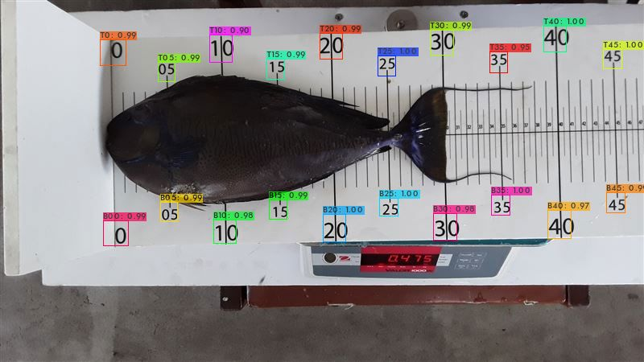
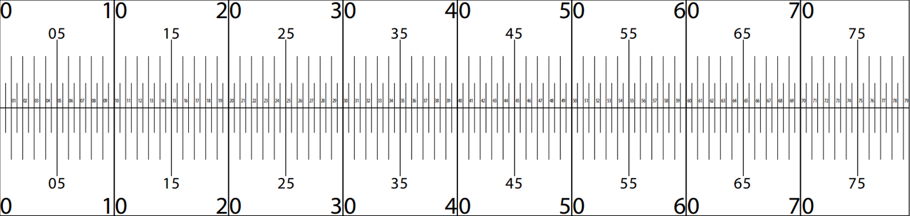
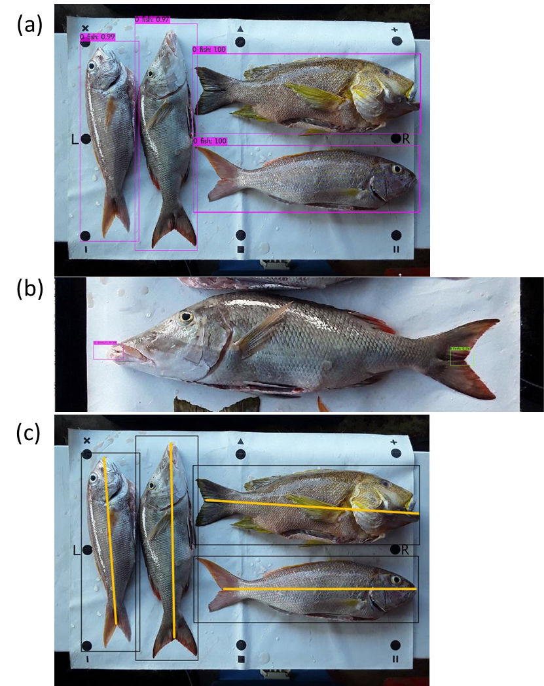
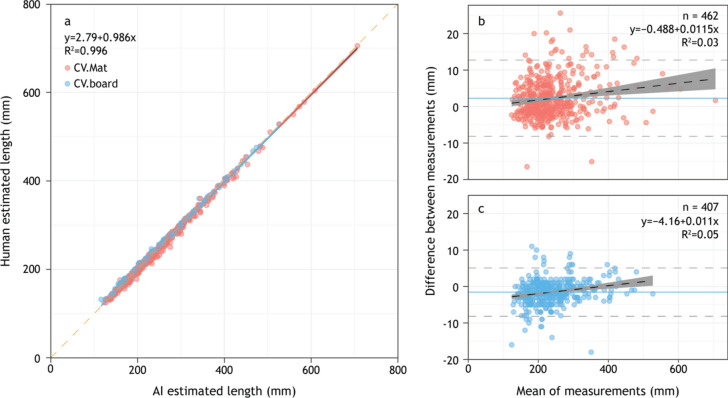

這張魚照從哪裡來？
原照、板面數字偵測圖及標準板型，來自 Franck Magron／Pacific Community（SPC，2022）的 SPC Measuring Board 3 官方範例，採 CC BY-NC 4.0。
原圖保留不變；尾叉長與全長的線是本頁另加的人工導讀，不是作者對這尾魚的測量結果，也沒有新增魚種、魚長或重量。板面數字框的信心值不能直接當成判對的機率。
做漁獲調查時，除了認魚種，也要知道魚有多長。這尾魚的嘴部靠近零點，尾鰭末端卻細長：該量到凹口，還是最遠的尾尖？
先看完整原照。兩種量法從同一個起點開始，停在不同的尾端。
點與線是人工導讀，沒有替這尾魚新增長度。原資料也未提供它經確認的魚種和魚長。
先把尺規對好，再談怎麼量這張是官方操作範例，沒有資料能確認它是否屬於後文 869 尾的研究比較。切換畫面只改變解說，不會算出這尾魚新的量測數值。
程式先辨認板上的數字，再和尺寸已知的標準板比對，調整照片的方向和比例。先把尺規對好，接著才能量魚。

作者公布的板面數字框；框旁分數不是魚長或魚種的正確率。

研究依魚的外形選用量法，不能把兩種長度混著比較。找到板上的刻度，也不表示魚的起點和尾端都已找對。
作者先校正量測板照片，使零點與尺度一致，再依尾叉標記框中心的位置換算長度。文中的 2 px/mm 是校正後影像的尺度，不能套到本頁原照或螢幕縮圖。本頁沒有重新計算校正或魚長。
需要重量時，研究會讀取電子秤上的數字，不是只看魚的外形就當作已經秤過重量。資料足夠後，也可以另用當地物種的長重關係估算重量；估算的重量與實際秤得的重量要分開記錄。
魚種也要另外辨認。系統的辨識結果仍可交人員核對，本頁不替這張範例補上魚名或信心分數。
量測墊和一次放一尾魚的量測板不同。程式先分開每尾魚，找出各自的嘴部前端和尾叉，再將同一尾魚的兩端配對，不能接到旁邊魚的尾巴。

先看魚與尺規，再分清尾叉長和全長，最後看作者如何比較人工與照片量測。這支動畫沒有聲音。
做漁獲調查時，除了認魚種，也要記下每尾魚有多長。這尾魚的尾鰭末端細長，該量到凹口，還是最遠的尾尖？ 照片取自SPC公開範例，原資料未提供這尾魚經確認的魚種和長度；這裡也沒有重新量測。
照片不一定拍得正。程式先辨認板上的數字，再和尺寸已知的標準板比對，調整照片的方向和比例。先把尺規對好，接著才能量魚。 彩色框是作者公布的結果；連到標準板的點和線是人工示意，沒有重新執行模型或計算這尾魚的長度。
從魚嘴最前端量到尾叉凹處，叫做「尾叉長」；量到尾鰭最遠處，則是「全長」。研究依魚的外形選用量法，因此比較長度時，也得用相同的量法。 點和線由人工加上，只用來解釋從哪裡量到哪裡，並非模型替這尾魚找到的位置或算出的長度。
調查員會對照原照，檢查線從哪裡開始、量到哪裡，以及採用哪一種量法。需要時可以調整量測線；照片留著，日後也能回頭核對。 畫面只示範該檢查哪些位置，沒有呈現這尾魚實際判錯或修改的過程。人工確認後，仍可能有量測誤差。
研究團隊把東加市場869尾魚的AI量測結果，和現場人工量得的長度逐一比較。平均絕對差是3.4毫米。照片能幫忙記錄魚長，量測位置和結果仍要檢查。 測試魚長130–720 mm。先算每尾相差多少，不分高估或低估，再取平均；這是整批測試的平均，不是每尾的誤差上限。市場漁獲也不能代表海裡全部的魚。
作者把東加市場魚隻由 AI 量測的長度，和現場人工量得的長度逐一比較。這組研究資料與第一頁的官方操作範例分開看。
869 尾魚 · 測試魚長 130–720 mm
3.4 mm
先算每尾相差多少，不分高估或低估，再取平均。這不是每尾魚的誤差上限，也不是第一頁中這尾魚的誤差。
Shedrawi 等（2024）· 原研究比較
Figure 3(b) 標示量測墊組 462 尾，3(c) 為量測板組 407 尾，合計 869。3.4 mm 仍只對應整體，不是這裡重新算出的各組誤差。圖中的 R² 也不是「99% 準確率」。
作者另記錄了 6 筆人工量測事後更正。本頁未能從公開來源取得原始分析資料，因此沒有重新計算每尾魚的量測結果，也不把調查員保留某個數值當成獨立證明它完全正確。
這套方法使用依規定擺放、附有尺度參考的漁獲照片。照片不清楚、魚沒有擺好，或重要部位被遮住，都可能影響量測，結果仍要回到原照檢查。
這些照片記錄的是被捕到、被調查的魚。漁法、地點和選樣會影響看到的尺寸，不能直接當作整片海裡所有魚的大小分布。
原照、板面數字偵測圖及標準板型，來自 Franck Magron／Pacific Community（SPC，2022）的 SPC Measuring Board 3 官方範例，採 CC BY-NC 4.0。
原圖保留不變；尾叉長與全長的線是本頁另加的人工導讀，不是作者對這尾魚的測量結果，也沒有新增魚種、魚長或重量。板面數字框的信心值不能直接當成判對的機率。
研究依 Shedrawi 等（2024）的 Scientific Reports 論文。Figure 3 與補充圖 S5 採 CC BY-NC-ND 4.0；本頁等比例顯示完整原圖，不裁切、不覆畫、不拆出其中照片或重建研究資料。
論文圖版與 SPC 範例的授權不同，不能互相代替。這裡沒有執行偵測、分類或校正模型，也沒有把官方範例中的魚當成研究中已確認納入驗證的魚隻。
尺規和量法一致，魚長才能比較；照片留下來，也讓結果能再核對。